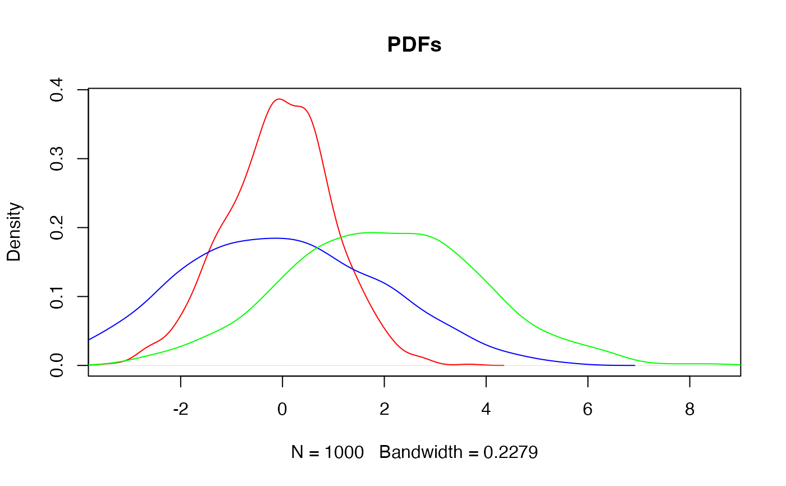

Calculate a Continuous Approximation of the Kullback-Leibler Divergence
Source:R/MCMC_normal.R
kullback_leibler_cont_appr.RdCalculate a Continuous Approximation of the Kullback-Leibler Divergence
Details
The continuous approximation of the Kullback-Leibler divergence is calculated as follows: $$ \frac{1}{n}\sum_{i=1}^n\big[\log(p_i) p_i - \log(q_i) p_i \big] $$
Examples
# Simulate n normally distributed variates
n <- 1000
dist1 <- rnorm(n)
dist2 <- rnorm(n, mean = 0, sd = 2)
dist3 <- rnorm(n, mean = 2, sd = 2)
# Estimate probability density functions
pdf1 <- density(dist1)
pdf2 <- density(dist2)
pdf3 <- density(dist3)
# Visualise PDFs
plot(pdf1, main = "PDFs", col = "red", xlim = range(dist3))
lines(pdf2, col = "blue")
lines(pdf3, col = "green")

# PDF 1 vs PDF 2
kullback_leibler_cont_appr(pdf1$y, pdf2$y)
#> [1] 0.06692195
# PDF 1 vs PDF 3
kullback_leibler_cont_appr(pdf1$y, pdf3$y)
#> [1] 0.0676468
# PDF 2 vs PDF 2
kullback_leibler_cont_appr(pdf2$y, pdf3$y)
#> [1] 0.001857994